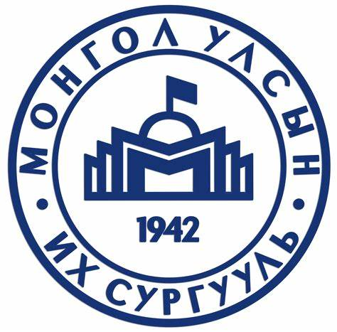

|  | МОНГОЛ УЛСЫН ИХ СУРГУУЛЬ | ||
|---|---|---|---|
| Эрдмийн хэт цахиваас Хөгжлийн гал бадармой | |||
| Цэс | |
archive | |
| Боловсрол, шинжлэх ухааны яамнаас хэрэгжүүлж байгаа “Инженер, технологийн дээд боловсрол” төсөл нь 2014 оноос эхэлсэн бөгөөд 7 дахь жилдээ амжилттай хэрэгжиж байна. Төсөл нь Монгол Улсын аж үйлдвэрийн салбарт шаардагдах инженерийн боловсон хүчнийг Япон улсад бэлтгэх, МУИС, ШУТИС-ийн инженерийн боловсрол олгох сургалтын үйл ажиллагааг чанаржуулах, судалгааны чадавхыг бэхжүүлэх үндсэн зорилготой. | |||
| Бүх эрх хуулиар хамгаалагдсан | |||